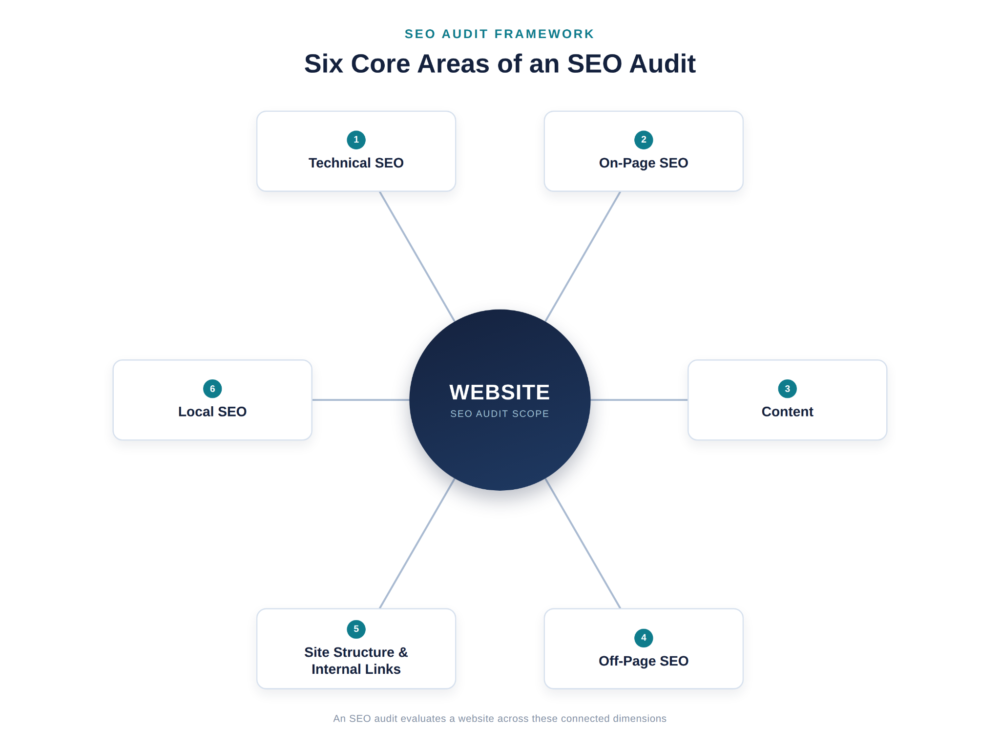
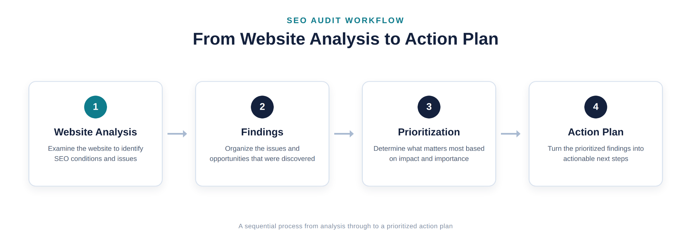
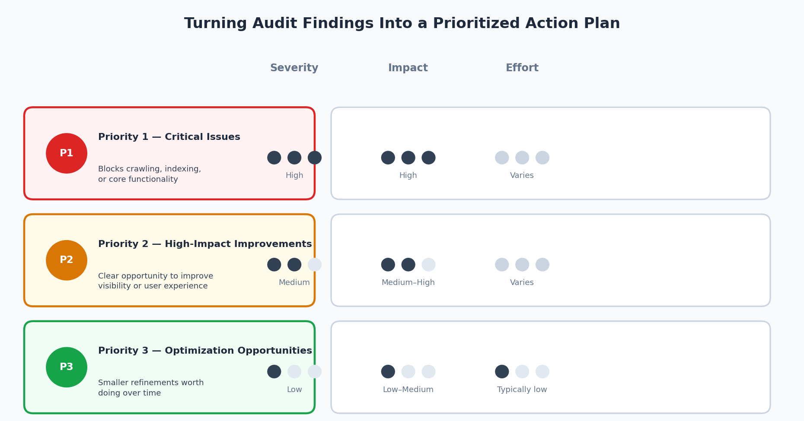

What Is an SEO Audit? A Beginner's Guide
An SEO audit is a structured review of a website. It examines how easily search engines can crawl, index, and understand the site, as well as how well the site serves its visitors. The review typically covers technical SEO, on-page elements, content, backlinks, and, when relevant, local SEO. The result is more than a list of problems. It gives you a clear picture of the site's current condition and what should be addressed first.
A website owner may run an SEO audit because it is difficult to improve something that has not been measured. A site might be losing visibility because important pages aren't getting indexed, titles and meta descriptions are missing, or the content doesn't match what searchers are looking for. Smaller issues can also become visible when the site is reviewed in a structured way. An audit replaces guesswork with a documented set of findings.
This guide explains why audits matter, what they check, how the process works, and what problems they can uncover. It also explains how to prioritize findings and what to do after the audit. If you're new to SEO, you'll learn what an SEO audit can tell you and what it cannot.
Why Is an SEO Audit Important?
An SEO audit matters because it turns a vague sense that "something's off" into specific, actionable information. A handful of reasons website owners run them:
- Finding technical problems. Search engines can only rank pages they can crawl and index. An audit checks whether anything -- a misconfigured robots.txt file, a stray noindex tag, broken internal links -- is quietly blocking pages from being found or understood.
- Identifying on-page issues. Missing title tags, duplicate meta descriptions, disorganized headings, and thin keyword targeting all make it harder for a page to rank for what it's actually about. An audit surfaces these page-by-page.
- Evaluating content. Not every page that ranks poorly has a technical problem. Sometimes the content itself doesn't match what searchers want, is outdated, or has been outperformed by better resources elsewhere. An audit looks at content quality and relevance, not just code.
- Understanding search visibility. An audit gives you a baseline: which pages are indexed, which are getting impressions, and which are effectively invisible in search results.
- Finding opportunities. Beyond fixing what's broken, audits often reveal gaps -- topics competitors cover that you don't, internal linking opportunities, or pages that could perform better with modest changes.
- Creating a prioritized action plan. Perhaps most importantly, a good audit doesn't just list issues. It organizes them so you know what to tackle first, which is especially valuable when time and resources are limited.
None of this means an audit fixes anything on its own -- it's a diagnostic step, not a repair. But without it, SEO work tends to be reactive and scattered rather than deliberate.
What Does an SEO Audit Check?
A thorough audit looks at a website from several angles, since search visibility depends on technical accessibility, on-page relevance, content quality, external signals, site architecture, and -- for many small and local businesses -- local search presence.
Here's what each area covers and what is included in an SEO audit at a typical level of depth.

Technical SEO
Technical SEO covers whether search engines can efficiently access and understand a site. A technical audit typically reviews:
- Crawling -- whether search engine bots can reach and navigate a site's pages without running into dead ends or blocked resources.
- Indexing -- whether pages that should appear in search results are actually being indexed, and whether any pages are unintentionally excluded.
- Site structure -- how logically pages are organized and whether that structure supports discovery.
- XML sitemap -- whether a sitemap exists, is accurate, and reflects the pages that should be indexed.
- Robots.txt -- whether this file is correctly configured and isn't accidentally blocking important sections of the site.
- Canonical tags -- whether canonical URLs are set correctly to avoid duplicate content confusion.
- Redirects -- whether redirects are implemented properly, without unnecessary chains or loops.
- Broken links -- internal or external links that lead to error pages.
- Page errors -- server errors, 404s, and other status code issues.
- Website performance -- page speed, Core Web Vitals, and other factors that affect how quickly and reliably pages load.
This is usually where people ask how to do a technical SEO audit in the first place -- and the honest answer is that it starts with a full crawl of the site (covered in the workflow section below), followed by a systematic review of each of these areas rather than a single check.
On-Page SEO
On-page SEO looks at the elements within individual pages that help search engines and users understand what each page is about. A typical on-page SEO audit reviews:
- Title tags -- whether they're unique, descriptive, and reasonably concise.
- Meta descriptions -- whether they accurately summarize the page and are written to be useful to a person scanning results.
- Headings -- whether H1s and subheadings are used logically to structure content.
- Internal links -- whether pages link to other relevant pages using clear, descriptive link text.
- URL structure -- whether URLs are readable and reasonably consistent.
- Image ALT text -- whether images have descriptive alternative text for accessibility and context.
- Keyword targeting -- whether pages are reasonably focused around the terms and topics they're meant to rank for, without being stuffed.
- Search-intent alignment -- whether the content on the page actually matches what someone searching that term is trying to accomplish.
Content
Content review is where an audit moves from mechanics to substance. This part of the process looks at:
- Content quality -- whether pages are accurate, well-organized, and genuinely useful to the reader.
- Relevance -- whether content still matches the topics and questions it was written to address.
- Search intent -- whether the format and depth of a page match what searchers expect (a quick answer versus an in-depth guide, for example).
- Content gaps -- topics your audience is searching for that your site doesn't currently cover.
- Outdated or underperforming content -- pages that reference old information, or that consistently get little traffic or engagement.
- Content organization -- whether related content is grouped and linked in a way that makes sense to both readers and search engines.
- Improvement opportunities -- pages that are close to being strong but could be expanded, clarified, or updated.
Off-Page SEO
Off-page SEO focuses on signals from outside the website itself, primarily backlinks. This part of an audit looks at:
- Backlink profile -- the overall collection of links pointing to the site.
- Link relevance and quality -- whether links come from sites that are topically related and reasonably credible, rather than from low-quality or unrelated sources.
- Potentially problematic links -- links that look spammy, unnatural, or otherwise risky.
- Competitor backlink context -- understanding, at a general level, where competitors are getting links from, which can highlight link-building approaches or content types worth exploring.
Off-page findings should be treated with some caution. Backlink data from third-party tools is an estimate, not a complete or perfectly accurate picture, and a site's link profile is only one of many factors involved in search visibility.
Website Structure and Internal Linking
This area overlaps with technical SEO but deserves its own focus because it directly affects both users and search engines. It covers:
- Whether important pages are easily discoverable, ideally within a few clicks of the homepage.
- Whether the site follows a logical hierarchy (broad category pages linking down to more specific pages, for example).
- How pages link to one another and whether those internal linking relationships make sense.
- Orphaned pages -- pages with no internal links pointing to them, which can make them difficult for both users and search engines to find.
- Whether primary navigation supports the way people actually want to move through the site.
Local SEO When Relevant
Local SEO isn't relevant to every website, but it's an important audit area for businesses that serve customers in a specific city, region, or service area -- think local service providers, restaurants, medical practices, or retail locations. When it applies, this part of the audit checks:
- Local search visibility -- how the business appears in local search results and map-based listings.
- Google Business Profile -- whether the profile is claimed, complete, and accurately reflects the business.
- Local information consistency -- whether business name, address, and phone number are consistent across the website and other listings.
- Local search relevance -- whether location-specific pages and content reflect the areas actually served.
If a business operates nationally or doesn't depend on geographic proximity to customers, local SEO is typically a smaller part of the audit or not applicable at all.
How Does an SEO Audit Work?
Knowing how to conduct a website audit means understanding the process as a sequence. The steps build on one another rather than happening in a random order. Here's what a typical audit process looks like and why each stage matters.

1. Define the Audit Scope and Goals
Before collecting data, define what the audit needs to accomplish. Is it a full-site audit or a review of one section? Is the goal to diagnose a traffic drop, prepare for a redesign, or establish a baseline? A clear scope keeps the audit focused and prevents it from becoming a review of everything at once.
2. Crawl and Collect Website Data
Most audits start with a crawl. A crawling tool moves through the site in a way that resembles a search engine bot and records pages, links, status codes, and technical attributes. The audit can also use search performance and analytics data to show how the site is performing in search.
3. Review Technical SEO
With crawl data in hand, the next step is checking crawlability, indexing status, sitemap accuracy, robots.txt configuration, redirects, broken links, and site performance. The purpose here is to confirm search engines can actually access and process the site correctly -- a prerequisite for everything else.
4. Analyze On-Page SEO
Next, individual pages are reviewed for title tags, meta descriptions, headings, URL structure, and keyword and intent alignment. The purpose is to see whether each page is set up to clearly communicate what it's about, both to search engines and to people scanning results.
5. Evaluate Content
This step looks past the mechanics of a page to its actual substance: is it accurate, useful, and aligned with what the target audience is searching for? This is also where content gaps and outdated pages typically get flagged.
6. Review Internal Links and Site Structure
Here the audit examines how pages connect to one another -- checking for orphaned pages, evaluating whether the site hierarchy makes sense, and confirming that important pages are easy to find through normal navigation.
7. Analyze Backlinks and Off-Page Signals
This step reviews the site's backlink profile using a third-party backlink tool, looking for overall link quality, relevant referring sites, and any links that look potentially harmful or unnatural.
8. Compare Relevant Competitors
Many audits include a look at how a small set of relevant competitors are performing -- what content they cover, how their sites are structured, and where they may be outperforming the site being audited. The purpose isn't to copy competitors, but to add context: is a given issue unique to this site, or standard across the space?
9. Identify and Prioritize Findings
All of the findings from the previous steps are compiled and organized. The purpose of this step is to move from a long list of individual issues to a smaller number of prioritized action items -- which is covered in detail in its own section below.
10. Create an Action Plan
Finally, prioritized findings are turned into a practical plan: what needs to be fixed, in what order, and who is responsible. This is the bridge between the audit itself and the implementation work that follows it.
What Problems Can an SEO Audit Uncover?
Every website is different, so an audit will not uncover the same issues on every site. A well-maintained site may have only a few minor findings, while a site that has not been reviewed for years may have many. Common findings include:
- Indexing problems, such as important pages missing from the index or a noindex tag left on a page by mistake.
- Crawlability issues, like pages blocked by robots.txt or buried too deep in the site structure to be found easily.
- Broken links, both internal links pointing to pages that no longer exist and outbound links to sites that have moved or gone offline.
- Missing or duplicated metadata, such as pages without title tags or multiple pages sharing the same meta description.
- Weak internal linking, including orphaned pages or important pages with very few links pointing to them.
- Poor site structure, where content isn't organized in a way that reflects how users or search engines would expect to find it.
- Content gaps, where competitors or search demand indicate topics the site hasn't addressed.
- Search-intent mismatches, where a page targets a keyword but doesn't actually deliver what someone searching for that term wants.
- Technical performance problems, such as slow-loading pages or Core Web Vitals issues.
- Backlink-related concerns, including low-quality or potentially spammy links pointing to the site.
Finding these issues is the point of the audit. What matters next is figuring out which ones are actually worth addressing first.
How Should You Prioritize SEO Audit Findings?
A completed audit can produce dozens of findings. Treating every issue as equally urgent is neither realistic nor useful. Prioritization means judging each issue based on several factors:
- Severity. Some issues actively prevent pages from being indexed or accessed; others are minor inefficiencies. Severity is usually the first filter.
- Potential impact. How much would fixing this issue plausibly improve visibility, usability, or performance? A broken link on a rarely visited page matters less than a metadata issue on a page that drives significant traffic.
- Number and importance of affected pages. An issue affecting a handful of low-value pages is different from the same issue affecting your most important pages, or affecting it site-wide.
- Effort required. Some fixes take minutes; others require development resources, content rewrites, or structural changes. Effort has to be weighed against impact.
- Dependencies. Some fixes need to happen before others make sense -- there's little point optimizing content on a page that isn't even being indexed yet.
- Business relevance. A technically minor issue on a page tied directly to revenue or lead generation may still deserve early attention because of what that page is worth to the business.
A practical way to organize findings, rather than trying to score every issue with a rigid formula, is to sort them into three general tiers:
- Priority 1 -- Critical issues. Problems that block indexing, crawling, or core functionality, or that affect high-value pages significantly. These typically get addressed first.
- Priority 2 -- High-impact improvements. Issues that don't block the site outright but represent a clear opportunity to improve visibility, relevance, or user experience.
- Priority 3 -- Optimization opportunities. Smaller refinements -- the kind of items that are worth doing but won't meaningfully change outcomes on their own.

This three-tier approach is a practical framework, not a universal scoring formula. Different sites, industries, and business goals will reasonably shift how a given issue gets prioritized, and experienced practitioners often adjust the framework based on context rather than applying it mechanically.
What Should You Do After an SEO Audit?
An audit produces findings -- it doesn't implement them. What comes next typically looks like this:
- Review findings. Read through the full set of results rather than jumping straight to the first item on the list, so you understand the overall state of the site before acting.
- Confirm important issues. For higher-severity findings especially, it's worth double-checking before committing resources -- tools can occasionally flag false positives, and context matters.
- Prioritize work. Apply a framework like the one above to decide what gets tackled first, factoring in business goals and available resources.
- Assign responsibilities. Larger fixes often involve developers, content writers, or designers. Being clear about who owns each item keeps the plan moving.
- Implement improvements. This is the actual SEO work -- fixing technical issues, rewriting or expanding content, cleaning up metadata, improving internal links, and so on.
- Monitor changes. After changes go live, it's worth tracking whether indexing status, rankings, or traffic shift as expected, and watching for any unintended side effects.
- Re-audit when appropriate. SEO isn't a one-time project. Sites change, content ages, and search results evolve, so periodic re-audits help confirm past fixes are holding and catch new issues early.
It's worth being clear about the distinction here: the audit is the diagnosis, and implementation is the treatment. A business owner can absolutely run the audit and hand the resulting action plan to an internal team or an agency to execute -- or do both themselves. Either way, the audit itself doesn't change anything on the site; the follow-through does.
SEO Audit Checklist
This is a condensed reference, not a replacement for the fuller explanations above. Use it as a quick way to confirm an audit has covered the essentials.
Technical SEO
- Crawling is unobstructed
- Important pages are indexed correctly
- XML sitemap is present and accurate
- Robots.txt is correctly configured
- Canonical tags are set appropriately
- Redirects are clean, without unnecessary chains
- Broken pages and links are identified
- Site performance and Core Web Vitals are reviewed
On-Page SEO
- Title tags are unique and descriptive
- Meta descriptions are present and accurate
- Headings are used logically
- URLs are clean and readable
- Internal links use clear anchor text
- Images have appropriate ALT text
- Pages align with target keywords and search intent
Content
- Content quality and accuracy are reviewed
- Content stays relevant to its topic
- Content gaps are identified
- Outdated content is flagged
- Content matches search intent
Off-Page SEO
- Backlink profile is reviewed
- Link quality and relevance are assessed
- Competitor backlink context is considered
Conclusion
An SEO audit is best understood as a diagnostic evaluation, not a fix in itself. It examines a website's technical foundation, on-page elements, content, backlink profile, structure, and -- where relevant -- local search presence, and turns what it finds into a documented set of issues and opportunities. Those findings still need interpretation: not every issue carries the same weight, which is why prioritization by severity, impact, effort, and business relevance matters as much as the audit itself.
Running an audit is not the same as implementing the changes it recommends. The real value comes after the audit, when findings are reviewed, prioritized, assigned, and acted on -- and when the site is periodically re-audited to confirm that fixes are holding and to catch new issues as they emerge. Approached that way, an SEO audit becomes what it's meant to be: a starting point for a clear, appropriately prioritized action plan, not an end in itself.
Frequently Asked Questions
What is an SEO audit?
An SEO audit is a systematic review of a website's technical setup, on-page elements, content, and backlink profile to identify issues and opportunities that affect how well the site can be found and understood by search engines.
Why is an SEO audit important?
It replaces guesswork with documented findings. Instead of assuming what might be wrong with a site's search performance, an audit identifies specific technical, on-page, content, and off-page issues, and helps organize them into a prioritized plan.
What does an SEO audit include?
A typical audit covers technical SEO (crawling, indexing, site performance, and similar factors), on-page SEO (titles, meta descriptions, headings, and alignment with the site's keyword research), content quality and relevance, off-page factors like backlinks, site structure and internal linking, and local SEO for businesses that serve a specific geographic area.
How often should a website have an SEO audit?
There's no single rule that fits every site. Many businesses run a full audit annually or after major site changes (like a redesign or migration), with lighter check-ins in between. Sites that change frequently or operate in competitive spaces may benefit from more frequent reviews.
How long does an SEO audit take?
It depends heavily on site size and audit depth. A small site might be audited in a few days; a large, complex site can take several weeks, particularly if it includes a detailed content review and competitor analysis.
Can I perform an SEO audit myself?
Yes, especially for smaller sites. Many technical and on-page checks can be done with free or low-cost tools. Larger or more complex sites, or audits requiring deeper backlink and competitive analysis, often benefit from more specialized tools and experience.
What is the difference between an SEO audit and an SEO strategy?
An audit is a diagnostic look at where a site currently stands -- what's working, what isn't, and why. An SEO strategy is the forward-looking plan for what to do about it, including priorities, resources, and goals. The audit typically informs the strategy, but the two serve different purposes.